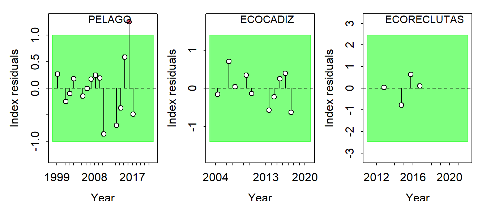
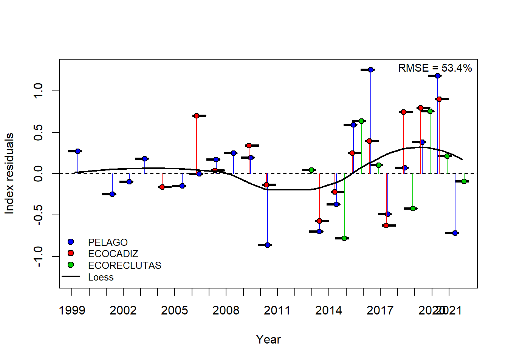
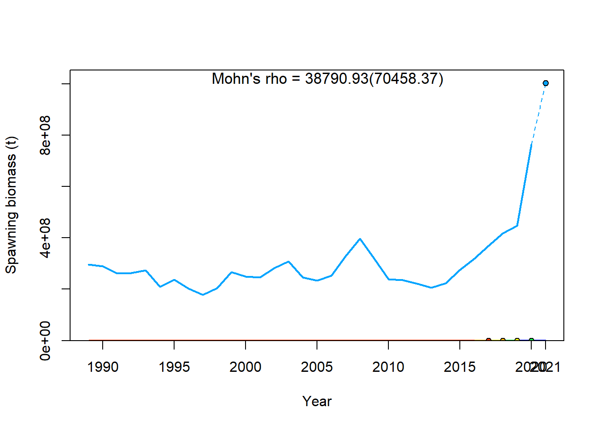
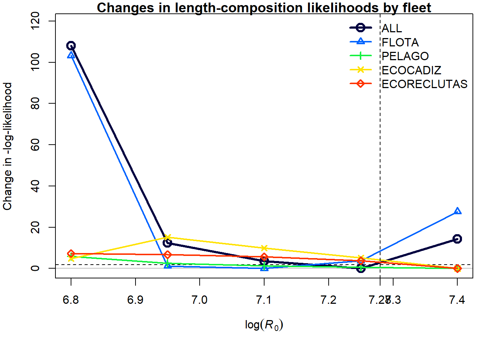

Convergencia
c.s1<-replist_s1$maximum_gradient_component
c.s2<-replist_s2$maximum_gradient_component
c.s3<-replist_s3$maximum_gradient_component
c.s4<-replist_s4$maximum_gradient_component
c.s5<-replist_s5$maximum_gradient_component
c.s6<-replist_s6$maximum_gradient_component
c.s7<-replist_s7$maximum_gradient_component
c.s8<-replist_s8$maximum_gradient_component
convergencia<-rbind(c.s1,c.s2,c.s3,c.s4,c.s5,c.s6,c.s7,c.s8)
convergencia%>%
kbl() %>%
kable_paper("hover", full_width = F)%>%
scroll_box(width = "100%",height="250px")| c.s1 | 0.0000159 |
| c.s2 | 0.0000674 |
| c.s3 | 0.0001865 |
| c.s4 | 0.0002910 |
| c.s5 | 0.0000702 |
| c.s6 | 0.0000126 |
| c.s7 | 0.0000031 |
| c.s8 | 0.0000440 |
Análisis de residuos
Graficos de los residuos y límites 3xsigma para índices, tallas y edades y genera una tabla de prueba de diagnóstico. Estas Figuras corresponden a un test de ajustes de los índices y composiciones de tallas. El sombreado verde indica que no hay evidencia (p = 0,05) y el sombreado rojo evidencia (p < 0,05) para rechazar la hipótesis de una serie temporal de residuos distribuida aleatoriamente, respectivamente. El área sombreada (verde/roja) abarca tres desviaciones estándar residuales a ambos lados de cero. Los puntos rojos fuera del sombreado violan el “límite de tres sigma” para esa serie.
- ‘cpue’ opcional para datos de índice,
- ‘len’ para datos de composición por tallas,
- ‘size’ para datos de composición por tallas generalizados,
- ‘age’ para datos de composición por edades o
- ‘con’ para datos condicionales de edad por tallas
Residuos
Índices
##'* S1*
plotdir.S1=paste0(dir.s1, "/plots_residuos")
dir.create(path=plotdir.S1, showWarnings = TRUE, recursive = TRUE)
r4ss::sspar(mfrow = c(1,3))
SSplotRunstest(replist_s1, subplots = "cpue", add = TRUE,legendcex = 0.8, verbose = F,
plotdir = plotdir.S1)## Index runs.p test sigma3.lo sigma3.hi type
## 1 PELAGO 0.109 Passed -1.147181 1.147181 cpue
## 2 ECOCADIZ 0.163 Passed -2.038259 2.038259 cpue
## 3 ECORECLUTAS 0.890 Passed -3.491259 3.491259 cpue##'* S2*
plotdir.S2=paste0(dir.s2, "/plots_residuos")
dir.create(path=plotdir.S2, showWarnings = TRUE, recursive = TRUE)
r4ss::sspar(mfrow = c(1,3))
SSplotRunstest(replist_s2, subplots = "cpue", add = TRUE, legendcex = 0.8, verbose = F,
plotdir = plotdir.S2)## Index runs.p test sigma3.lo sigma3.hi type
## 1 PELAGO 0.401 Passed -1.064164 1.064164 cpue
## 2 ECOCADIZ 0.910 Passed -1.564711 1.564711 cpue
## 3 ECORECLUTAS 0.841 Passed -2.430055 2.430055 cpue## S3
plotdir.S3=paste0(dir.s3, "/plots_residuos")
dir.create(path=plotdir.S3, showWarnings = TRUE, recursive = TRUE)
r4ss::sspar(mfrow = c(1,3))
SSplotRunstest(replist_s3, subplots = "cpue", add = TRUE, legendcex = 0.8, verbose = F,
plotdir = plotdir.S3)## Index runs.p test sigma3.lo sigma3.hi type
## 1 PELAGO 0.401 Passed -1.061788 1.061788 cpue
## 2 ECOCADIZ 0.910 Passed -1.570706 1.570706 cpue
## 3 ECORECLUTAS 0.841 Passed -2.418695 2.418695 cpue## S4
plotdir.S4=paste0(dir.s4, "/plots_residuos")
dir.create(path=plotdir.S4, showWarnings = TRUE, recursive = TRUE)
r4ss::sspar(mfrow = c(1,3))
SSplotRunstest(replist_s4, subplots = "cpue", add = TRUE, legendcex = 0.8, verbose = F,
plotdir = plotdir.S4)## Index runs.p test sigma3.lo sigma3.hi type
## 1 PELAGO 0.401 Passed -0.9769056 0.9769056 cpue
## 2 ECOCADIZ 0.556 Passed -1.6062487 1.6062487 cpue
## 3 ECORECLUTAS 0.841 Passed -2.8814708 2.8814708 cpue## S5
plotdir.S5=paste0(dir.s5, "/plots_residuos")
dir.create(path=plotdir.S5, showWarnings = TRUE, recursive = TRUE)
r4ss::sspar(mfrow = c(1,3))
SSplotRunstest(replist_s5, subplots = "cpue",add = TRUE,legendcex = 0.8,verbose = F,
plotdir = plotdir.S5)## Index runs.p test sigma3.lo sigma3.hi type
## 1 PELAGO 0.401 Passed -0.9898656 0.9898656 cpue
## 2 ECOCADIZ 0.163 Passed -1.5818268 1.5818268 cpue
## 3 ECORECLUTAS 0.841 Passed -2.8611808 2.8611808 cpue## S6
plotdir.S6=paste0(dir.s6, "/plots_residuos")
dir.create(path=plotdir.S6, showWarnings = TRUE, recursive = TRUE)
r4ss::sspar(mfrow = c(1,3))
SSplotRunstest(replist_s6, subplots = "cpue",add = TRUE,legendcex = 0.8,verbose = F,
plotdir = plotdir.S6)
## Index runs.p test sigma3.lo sigma3.hi type
## 1 PELAGO 0.401 Passed -1.098723 1.098723 cpue
## 2 ECOCADIZ 0.103 Passed -1.342302 1.342302 cpue
## 3 ECORECLUTAS 0.841 Passed -2.750317 2.750317 cpue## S7
plotdir.S7=paste0(dir.s7, "/plots_residuos")
dir.create(path=plotdir.S7, showWarnings = TRUE, recursive = TRUE)
r4ss::sspar(mfrow = c(1,3))
SSplotRunstest(replist_s7, subplots = "cpue",add = TRUE,legendcex = 0.8,verbose = F,
plotdir = plotdir.S7)## Index runs.p test sigma3.lo sigma3.hi type
## 1 PELAGO 0.401 Passed -1.101288 1.101288 cpue
## 2 ECOCADIZ 0.251 Passed -1.357343 1.357343 cpue
## 3 ECORECLUTAS 0.841 Passed -2.826655 2.826655 cpue## S8
plotdir.S8=paste0(dir.s8, "/plots_residuos")
dir.create(path=plotdir.S8, showWarnings = TRUE, recursive = TRUE)
r4ss::sspar(mfrow = c(1,3))
SSplotRunstest(replist_s8, subplots = "cpue",add = TRUE,legendcex = 0.8,verbose = F,
plotdir = plotdir.S8)
## Index runs.p test sigma3.lo sigma3.hi type
## 1 PELAGO 0.401 Passed -1.002643 1.002643 cpue
## 2 ECOCADIZ 0.251 Passed -1.394152 1.394152 cpue
## 3 ECORECLUTAS 0.841 Passed -2.460770 2.460770 cpueTallas
### S1
r4ss::sspar(mfrow = c(2,2))
SSplotRunstest(replist_s1,
subplots = "len", add = TRUE,legendcex = 0.8, verbose = F,
plotdir = plotdir.S1)## Index runs.p test sigma3.lo sigma3.hi type
## 1 FLOTA 0.245 Passed -0.27313067 0.27313067 len
## 2 PELAGO 0.052 Passed -0.20354902 0.20354902 len
## 3 ECOCADIZ 0.556 Passed -0.18282452 0.18282452 len
## 4 ECORECLUTAS 0.001 Failed -0.06972435 0.06972435 len### S2
r4ss::sspar(mfrow = c(2,2))
SSplotRunstest(replist_s2,
subplots = "len", add = TRUE,legendcex = 0.8, verbose = F,
plotdir = plotdir.S2)## Index runs.p test sigma3.lo sigma3.hi type
## 1 FLOTA 0.224 Passed -0.2926434 0.2926434 len
## 2 PELAGO 0.109 Passed -0.1879304 0.1879304 len
## 3 ECOCADIZ 0.023 Failed -0.1808321 0.1808321 len
## 4 ECORECLUTAS 0.001 Failed -0.1709456 0.1709456 len### S3
r4ss::sspar(mfrow = c(2,2))
SSplotRunstest(replist_s3,
subplots = "len", add = TRUE,legendcex = 0.8, verbose = F,
plotdir = plotdir.S3)## Index runs.p test sigma3.lo sigma3.hi type
## 1 FLOTA 0.224 Passed -0.2925541 0.2925541 len
## 2 PELAGO 0.109 Passed -0.1883418 0.1883418 len
## 3 ECOCADIZ 0.023 Failed -0.1808682 0.1808682 len
## 4 ECORECLUTAS 0.001 Failed -0.1699520 0.1699520 len### S4
r4ss::sspar(mfrow = c(2,2))
SSplotRunstest(replist_s4,
subplots = "len", add = TRUE,legendcex = 0.8, verbose = F,
plotdir = plotdir.S4)## Index runs.p test sigma3.lo sigma3.hi type
## 1 FLOTA 0.091 Passed -0.2320310 0.2320310 len
## 2 PELAGO 0.092 Passed -0.1658645 0.1658645 len
## 3 ECOCADIZ 0.090 Passed -0.1791870 0.1791870 len
## 4 ECORECLUTAS 0.001 Failed -0.1780408 0.1780408 len### S5
r4ss::sspar(mfrow = c(2,2))
SSplotRunstest(replist_s5,
subplots = "len", add = TRUE,legendcex = 0.8, verbose = F,
plotdir = plotdir.S5)## Index runs.p test sigma3.lo sigma3.hi type
## 1 FLOTA 0.145 Passed -0.2209147 0.2209147 len
## 2 PELAGO 0.092 Passed -0.1678320 0.1678320 len
## 3 ECOCADIZ 0.090 Passed -0.1809026 0.1809026 len
## 4 ECORECLUTAS 0.001 Failed -0.1786764 0.1786764 len### S6
r4ss::sspar(mfrow = c(2,2))
SSplotRunstest(replist_s6,
subplots = "len", add = TRUE,legendcex = 0.8, verbose = F,
plotdir = plotdir.S6)## Index runs.p test sigma3.lo sigma3.hi type
## 1 FLOTA 0.029 Failed -0.2058449 0.2058449 len
## 2 PELAGO 0.155 Passed -0.2146878 0.2146878 len
## 3 ECOCADIZ 0.500 Passed -0.1872236 0.1872236 len
## 4 ECORECLUTAS 0.001 Failed -0.2482719 0.2482719 len### S7
r4ss::sspar(mfrow = c(2,2))
SSplotRunstest(replist_s7,
subplots = "len", add = TRUE,legendcex = 0.8, verbose = F,
plotdir = plotdir.S7)## Index runs.p test sigma3.lo sigma3.hi type
## 1 FLOTA 0.001 Failed -0.2231557 0.2231557 len
## 2 PELAGO 0.031 Failed -0.1912246 0.1912246 len
## 3 ECOCADIZ 0.103 Passed -0.1753090 0.1753090 len
## 4 ECORECLUTAS 0.001 Failed -0.2478913 0.2478913 len### S8
r4ss::sspar(mfrow = c(2,2))
SSplotRunstest(replist_s8,
subplots = "len", add = TRUE,legendcex = 0.8, verbose = F,
plotdir = plotdir.S8)## Index runs.p test sigma3.lo sigma3.hi type
## 1 FLOTA 0.104 Passed -0.2163649 0.2163649 len
## 2 PELAGO 0.251 Passed -0.1375237 0.1375237 len
## 3 ECOCADIZ 0.103 Passed -0.1503363 0.1503363 len
## 4 ECORECLUTAS 0.001 Failed -0.1532383 0.1532383 lenTabla de diagnóstico
#S1
test_indices.s1<-SSrunstest(replist_s1,quants = "cpue",verbose=F)
test_len.s1<-SSrunstest(replist_s1,quants = "len",verbose=F)
rbind(test_indices.s1,test_len.s1)## Index runs.p test sigma3.lo sigma3.hi type
## 1 PELAGO 0.109 Passed -1.14718125 1.14718125 cpue
## 2 ECOCADIZ 0.163 Passed -2.03825904 2.03825904 cpue
## 3 ECORECLUTAS 0.890 Passed -3.49125887 3.49125887 cpue
## 4 FLOTA 0.245 Passed -0.27313067 0.27313067 len
## 5 PELAGO 0.052 Passed -0.20354902 0.20354902 len
## 6 ECOCADIZ 0.556 Passed -0.18282452 0.18282452 len
## 7 ECORECLUTAS 0.001 Failed -0.06972435 0.06972435 len#S2
test_indices.s2<-SSrunstest(replist_s2,quants = "cpue",verbose=F)
test_len.s2<-SSrunstest(replist_s2,quants = "len",verbose=F)
rbind(test_indices.s2,test_len.s2)## Index runs.p test sigma3.lo sigma3.hi type
## 1 PELAGO 0.401 Passed -1.0641644 1.0641644 cpue
## 2 ECOCADIZ 0.910 Passed -1.5647108 1.5647108 cpue
## 3 ECORECLUTAS 0.841 Passed -2.4300546 2.4300546 cpue
## 4 FLOTA 0.224 Passed -0.2926434 0.2926434 len
## 5 PELAGO 0.109 Passed -0.1879304 0.1879304 len
## 6 ECOCADIZ 0.023 Failed -0.1808321 0.1808321 len
## 7 ECORECLUTAS 0.001 Failed -0.1709456 0.1709456 len#S3
test_indices.s3<-SSrunstest(replist_s3,quants = "cpue",verbose=F)
test_len.s3<-SSrunstest(replist_s3,quants = "len",verbose=F)
rbind(test_indices.s3,test_len.s3)## Index runs.p test sigma3.lo sigma3.hi type
## 1 PELAGO 0.401 Passed -1.0617879 1.0617879 cpue
## 2 ECOCADIZ 0.910 Passed -1.5707056 1.5707056 cpue
## 3 ECORECLUTAS 0.841 Passed -2.4186948 2.4186948 cpue
## 4 FLOTA 0.224 Passed -0.2925541 0.2925541 len
## 5 PELAGO 0.109 Passed -0.1883418 0.1883418 len
## 6 ECOCADIZ 0.023 Failed -0.1808682 0.1808682 len
## 7 ECORECLUTAS 0.001 Failed -0.1699520 0.1699520 len#s4
test_indices.s4<-SSrunstest(replist_s4,quants = "cpue",verbose=F)
test_len.s4<-SSrunstest(replist_s4,quants = "len",verbose=F)
rbind(test_indices.s4,test_len.s4)## Index runs.p test sigma3.lo sigma3.hi type
## 1 PELAGO 0.401 Passed -0.9769056 0.9769056 cpue
## 2 ECOCADIZ 0.556 Passed -1.6062487 1.6062487 cpue
## 3 ECORECLUTAS 0.841 Passed -2.8814708 2.8814708 cpue
## 4 FLOTA 0.091 Passed -0.2320310 0.2320310 len
## 5 PELAGO 0.092 Passed -0.1658645 0.1658645 len
## 6 ECOCADIZ 0.090 Passed -0.1791870 0.1791870 len
## 7 ECORECLUTAS 0.001 Failed -0.1780408 0.1780408 len#s5
test_indices.s5<-SSrunstest(replist_s5,quants = "cpue",verbose=F)
test_len.s5<-SSrunstest(replist_s5,quants = "len",verbose=F)
rbind(test_indices.s5,test_len.s5)## Index runs.p test sigma3.lo sigma3.hi type
## 1 PELAGO 0.401 Passed -0.9898656 0.9898656 cpue
## 2 ECOCADIZ 0.163 Passed -1.5818268 1.5818268 cpue
## 3 ECORECLUTAS 0.841 Passed -2.8611808 2.8611808 cpue
## 4 FLOTA 0.145 Passed -0.2209147 0.2209147 len
## 5 PELAGO 0.092 Passed -0.1678320 0.1678320 len
## 6 ECOCADIZ 0.090 Passed -0.1809026 0.1809026 len
## 7 ECORECLUTAS 0.001 Failed -0.1786764 0.1786764 len#s6
test_indices.s6<-SSrunstest(replist_s6,quants = "cpue",verbose=F)
test_len.s6<-SSrunstest(replist_s6,quants = "len",verbose=F)
rbind(test_indices.s6,test_len.s6)## Index runs.p test sigma3.lo sigma3.hi type
## 1 PELAGO 0.401 Passed -1.0987234 1.0987234 cpue
## 2 ECOCADIZ 0.103 Passed -1.3423017 1.3423017 cpue
## 3 ECORECLUTAS 0.841 Passed -2.7503167 2.7503167 cpue
## 4 FLOTA 0.029 Failed -0.2058449 0.2058449 len
## 5 PELAGO 0.155 Passed -0.2146878 0.2146878 len
## 6 ECOCADIZ 0.500 Passed -0.1872236 0.1872236 len
## 7 ECORECLUTAS 0.001 Failed -0.2482719 0.2482719 len#s7
test_indices.s7<-SSrunstest(replist_s7,quants = "cpue",verbose=F)
test_len.s7<-SSrunstest(replist_s7,quants = "len",verbose=F)
rbind(test_indices.s7,test_len.s7)## Index runs.p test sigma3.lo sigma3.hi type
## 1 PELAGO 0.401 Passed -1.1012880 1.1012880 cpue
## 2 ECOCADIZ 0.251 Passed -1.3573427 1.3573427 cpue
## 3 ECORECLUTAS 0.841 Passed -2.8266551 2.8266551 cpue
## 4 FLOTA 0.001 Failed -0.2231557 0.2231557 len
## 5 PELAGO 0.031 Failed -0.1912246 0.1912246 len
## 6 ECOCADIZ 0.103 Passed -0.1753090 0.1753090 len
## 7 ECORECLUTAS 0.001 Failed -0.2478913 0.2478913 len#s8
test_indices.s8<-SSrunstest(replist_s8,quants = "cpue",verbose=F)
test_len.s8<-SSrunstest(replist_s8,quants = "len",verbose=F)
rbind(test_indices.s8,test_len.s8)## Index runs.p test sigma3.lo sigma3.hi type
## 1 PELAGO 0.401 Passed -1.0026432 1.0026432 cpue
## 2 ECOCADIZ 0.251 Passed -1.3941520 1.3941520 cpue
## 3 ECORECLUTAS 0.841 Passed -2.4607701 2.4607701 cpue
## 4 FLOTA 0.104 Passed -0.2163649 0.2163649 len
## 5 PELAGO 0.251 Passed -0.1375237 0.1375237 len
## 6 ECOCADIZ 0.103 Passed -0.1503363 0.1503363 len
## 7 ECORECLUTAS 0.001 Failed -0.1532383 0.1532383 lenBoxplot residuales con loess
Ejecuta el gráfico de prueba y el gráfico de residuos conjuntos para ajustes a los índices, donde las líneas verticales con puntos muestran los residuos y las líneas negras sólidas muestran loess más suave en todos los residuos. Los boxplot indican la mediana y cuantiles en los casos en que los residuos de los índices múltiples estén disponibles para un año determinado. Los errores cuadráticos medios (RMSE) se incluyen en la esquina superior derecha de cada gráfico. Los plots de residuales para todos los índices como boxplot están codificados por colores por flota, con un loess que muestra tendencias sistemáticas a lo largo del tiempo.
Boxplot
Índices
### S1
SSplotJABBAres(replist_s1, subplots = "cpue", add = T,legendcex = 0.8,verbose = F,
plotdir = plotdir.S1)## indices RMSE.perc nobs
## 1 PELAGO 60.4 19
## 2 ECOCADIZ 72.4 13
## 3 ECORECLUTAS 57.9 8
## 4 Combined 64.1 40### S2
SSplotJABBAres(replist_s2, subplots = "cpue", add = T,legendcex = 0.8,verbose = F,
plotdir = plotdir.S2)## indices RMSE.perc nobs
## 1 PELAGO 47.9 19
## 2 ECOCADIZ 57.2 13
## 3 ECORECLUTAS 53.1 8
## 4 Combined 52.1 40### S3
SSplotJABBAres(replist_s3, subplots = "cpue", add = T,legendcex = 0.8,verbose = F,
plotdir = plotdir.S3)## indices RMSE.perc nobs
## 1 PELAGO 48.1 19
## 2 ECOCADIZ 58.4 13
## 3 ECORECLUTAS 55.4 8
## 4 Combined 53.1 40### S4
SSplotJABBAres(replist_s4, subplots = "cpue", add = T,legendcex = 0.8,verbose = F,
plotdir = plotdir.S4)## indices RMSE.perc nobs
## 1 PELAGO 46.7 19
## 2 ECOCADIZ 56.1 13
## 3 ECORECLUTAS 52.2 8
## 4 Combined 51.0 40### S5
SSplotJABBAres(replist_s5, subplots = "cpue", add = T,legendcex = 0.8,verbose = F,
plotdir = plotdir.S5)## indices RMSE.perc nobs
## 1 PELAGO 47.3 19
## 2 ECOCADIZ 56.7 13
## 3 ECORECLUTAS 52.3 8
## 4 Combined 51.5 40### S6
SSplotJABBAres(replist_s6, subplots = "cpue", add = T,legendcex = 0.8,verbose = F,
plotdir = plotdir.S6)## indices RMSE.perc nobs
## 1 PELAGO 49.3 19
## 2 ECOCADIZ 54.6 13
## 3 ECORECLUTAS 52.0 8
## 4 Combined 51.6 40### S7
SSplotJABBAres(replist_s7, subplots = "cpue", add = T,legendcex = 0.8,verbose = F,
plotdir = plotdir.S7)## indices RMSE.perc nobs
## 1 PELAGO 48.3 19
## 2 ECOCADIZ 47.7 13
## 3 ECORECLUTAS 42.9 8
## 4 Combined 47.1 40### S8
SSplotJABBAres(replist_s8, subplots = "cpue", add = T,legendcex = 0.8,verbose = F,
plotdir = plotdir.S8)
## indices RMSE.perc nobs
## 1 PELAGO 55.9 19
## 2 ECOCADIZ 52.9 13
## 3 ECORECLUTAS 47.7 8
## 4 Combined 53.4 40Tallas
### S1
SSplotJABBAres(replist_s1,subplots = "len",add = TRUE,verbose = F,legendcex = 0.8,
plotdir = plotdir.S1)## indices RMSE.perc nobs
## 1 FLOTA 13.8 116
## 2 PELAGO 8.4 15
## 3 ECOCADIZ 9.3 10
## 4 ECORECLUTAS 13.6 4
## 5 Combined 13.1 145### S2
SSplotJABBAres(replist_s2,subplots = "len",add = TRUE,verbose = F,legendcex = 0.8,
plotdir = plotdir.S2)## indices RMSE.perc nobs
## 1 FLOTA 17.8 116
## 2 PELAGO 7.9 15
## 3 ECOCADIZ 12.2 10
## 4 ECORECLUTAS 23.6 4
## 5 Combined 16.9 145### S3
SSplotJABBAres(replist_s3,subplots = "len",add = TRUE,verbose = F,legendcex = 0.8,
plotdir = plotdir.S3)## indices RMSE.perc nobs
## 1 FLOTA 17.8 116
## 2 PELAGO 7.8 15
## 3 ECOCADIZ 12.1 10
## 4 ECORECLUTAS 23.7 4
## 5 Combined 16.9 145### S4
SSplotJABBAres(replist_s4,subplots = "len",add = TRUE,verbose = F,legendcex = 0.8,
plotdir = plotdir.S4)## indices RMSE.perc nobs
## 1 FLOTA 15.7 116
## 2 PELAGO 7.2 15
## 3 ECOCADIZ 9.1 10
## 4 ECORECLUTAS 15.8 4
## 5 Combined 14.7 145### S5
SSplotJABBAres(replist_s5,subplots = "len",add = TRUE,verbose = F,legendcex = 0.8,
plotdir = plotdir.S5)
## indices RMSE.perc nobs
## 1 FLOTA 15.4 116
## 2 PELAGO 7.4 15
## 3 ECOCADIZ 9.2 10
## 4 ECORECLUTAS 16.7 4
## 5 Combined 14.4 145### S6
SSplotJABBAres(replist_s6,subplots = "len",add = TRUE,verbose = F,legendcex = 0.8,
plotdir = plotdir.S6)## indices RMSE.perc nobs
## 1 FLOTA 14.3 116
## 2 PELAGO 9.5 15
## 3 ECOCADIZ 8.1 10
## 4 ECORECLUTAS 7.8 4
## 5 Combined 13.4 145### S7
SSplotJABBAres(replist_s7,subplots = "len",add = TRUE,verbose = F,legendcex = 0.8,
plotdir = plotdir.S7)## indices RMSE.perc nobs
## 1 FLOTA 12.8 116
## 2 PELAGO 8.0 15
## 3 ECOCADIZ 7.6 10
## 4 ECORECLUTAS 8.2 4
## 5 Combined 12.0 145### S8
SSplotJABBAres(replist_s8,subplots = "len",add = TRUE,verbose = F,legendcex = 0.8,
plotdir = plotdir.S8)## indices RMSE.perc nobs
## 1 FLOTA 12.1 116
## 2 PELAGO 5.9 15
## 3 ECOCADIZ 5.7 10
## 4 ECORECLUTAS 6.9 4
## 5 Combined 11.2 145Retrospectivo
#'*Crear un nuevo directorio para el `Restrospectivo`*
dir.retro <- here("Retrospectivo")
dir.create(path=dir.retro, showWarnings = TRUE, recursive = TRUE)
#----------------------------------------------------------------------#'*Crear un subdirectorio llamado `plots_Retrospectivo`*
#'
plotdir=paste0(dir.retro, "/plots_Retrospectivo")
dir.create(path=plotdir, showWarnings = TRUE, recursive = TRUE)#'*Crear un subdirectorio llamado `S1`*
ref.dir.S1 <- paste0(dir.retro,'/S1')
ref.dir.S2 <- paste0(dir.retro,'/S2')
ref.dir.S3 <- paste0(dir.retro,'/S3')
ref.dir.S4 <- paste0(dir.retro,'/S4')
ref.dir.S5 <- paste0(dir.retro,'/S5')
ref.dir.S6 <- paste0(dir.retro,'/S6')
ref.dir.S7 <- paste0(dir.retro,'/S7')
ref.dir.S8 <- paste0(dir.retro,'/S8')
dir.create(path=ref.dir.S1, showWarnings = TRUE, recursive = TRUE)
dir.create(path=ref.dir.S2, showWarnings = TRUE, recursive = TRUE)
dir.create(path=ref.dir.S3, showWarnings = TRUE, recursive = TRUE)
dir.create(path=ref.dir.S4, showWarnings = TRUE, recursive = TRUE)
dir.create(path=ref.dir.S5, showWarnings = TRUE, recursive = TRUE)
dir.create(path=ref.dir.S6, showWarnings = TRUE, recursive = TRUE)
dir.create(path=ref.dir.S7, showWarnings = TRUE, recursive = TRUE)
dir.create(path=ref.dir.S8, showWarnings = TRUE, recursive = TRUE)#'* 8. Leer los archivos del modelo `SS_read()` *
inputs_S1 <- r4ss::SS_read(dir = ref.dir.S1,ss_new = FALSE, verbose = FALSE)
inputs_S2 <- r4ss::SS_read(dir = ref.dir.S2,ss_new = FALSE, verbose = FALSE)
inputs_S3 <- r4ss::SS_read(dir = ref.dir.S3,ss_new = FALSE, verbose = FALSE)
inputs_S4 <- r4ss::SS_read(dir = ref.dir.S4,ss_new = FALSE, verbose = FALSE)
inputs_S5 <- r4ss::SS_read(dir = ref.dir.S5,ss_new = FALSE, verbose = FALSE)
inputs_S6 <- r4ss::SS_read(dir = ref.dir.S6,ss_new = FALSE, verbose = FALSE)
inputs_S7 <- r4ss::SS_read(dir = ref.dir.S7,ss_new = FALSE, verbose = FALSE)
inputs_S8 <- r4ss::SS_read(dir = ref.dir.S8,ss_new = FALSE, verbose = FALSE)#'* 9. Editar el archivo starter para que muestre una línea de visualización por cada iteración *
inputs_S1$start$run_display_detail <- 1
inputs_S2$start$run_display_detail <- 1
inputs_S3$start$run_display_detail <- 1
inputs_S4$start$run_display_detail <- 1
inputs_S5$start$run_display_detail <- 1
inputs_S6$start$run_display_detail <- 1
inputs_S7$start$run_display_detail <- 1
inputs_S8$start$run_display_detail <- 1#'*10. Escribir los modelos modificados *
r4ss::SS_write(inputs_S1, dir = ref.dir.S1, overwrite = TRUE)
r4ss::SS_write(inputs_S2, dir = ref.dir.S2, overwrite = TRUE)
r4ss::SS_write(inputs_S3, dir = ref.dir.S3, overwrite = TRUE)
r4ss::SS_write(inputs_S4, dir = ref.dir.S4, overwrite = TRUE)
r4ss::SS_write(inputs_S5, dir = ref.dir.S5, overwrite = TRUE)
r4ss::SS_write(inputs_S6, dir = ref.dir.S6, overwrite = TRUE)
r4ss::SS_write(inputs_S7, dir = ref.dir.S7, overwrite = TRUE)
r4ss::SS_write(inputs_S8, dir = ref.dir.S8, overwrite = TRUE)#'* 11. Identificar el período retrospectivo *
start.retro <- 0 # último año del modelo
end.retro <- 5 # número de años para el retrospectivo #'*12. Ejecutar la función `SS_doRetro()` *
#?SS_doRetro()
esc<-c(ref.dir.S1,ref.dir.S2,ref.dir.S3,ref.dir.S4,ref.dir.S5,ref.dir.S6,ref.dir.S7,ref.dir.S8)
for(i in 1:8){
retro(dir=esc[i],
exe = "ss_win", #"ss_osx",
years=start.retro:-end.retro)
}#'*13. Leer los archivos de salida `SSgetoutput()`*
retroM.S1<-SSgetoutput(dirvec=file.path(ref.dir.S1, "Retrospectives", paste("retro",start.retro:-end.retro,sep="")))
retroM.S2<-SSgetoutput(dirvec=file.path(ref.dir.S2, "Retrospectives", paste("retro",start.retro:-end.retro,sep="")))
retroM.S3<-SSgetoutput(dirvec=file.path(ref.dir.S3, "Retrospectives", paste("retro",start.retro:-end.retro,sep="")))
retroM.S4<-SSgetoutput(dirvec=file.path(ref.dir.S4, "Retrospectives", paste("retro",start.retro:-end.retro,sep="")))
retroM.S5<-SSgetoutput(dirvec=file.path(ref.dir.S5, "Retrospectives", paste("retro",start.retro:-end.retro,sep="")))
retroM.S6<-SSgetoutput(dirvec=file.path(ref.dir.S6, "Retrospectives", paste("retro",start.retro:-end.retro,sep="")))
retroM.S7<-SSgetoutput(dirvec=file.path(ref.dir.S7, "Retrospectives", paste("retro",start.retro:-end.retro,sep="")))
retroM.S8<-SSgetoutput(dirvec=file.path(ref.dir.S8, "Retrospectives", paste("retro",start.retro:-end.retro,sep="")))Resumen
#'* 14. Resumir las salidas con la función `SSsummarize()`*
retroSummaryS1 <- SSsummarize(retroM.S1)
retroSummaryS2 <- SSsummarize(retroM.S2)
retroSummaryS3 <- SSsummarize(retroM.S3)
retroSummaryS4 <- SSsummarize(retroM.S4)
retroSummaryS5 <- SSsummarize(retroM.S5)
retroSummaryS6 <- SSsummarize(retroM.S6)
retroSummaryS7 <- SSsummarize(retroM.S7)
retroSummaryS8 <- SSsummarize(retroM.S8)Figura 1
#'* 15. Funciones para generar plots de Retrospectivo `SSplotRetro()`*
#'*forecast =FALSE*
#sspar(mfrow=c(1,1),plot.cex=0.8)
SSplotRetro(retroSummaryS1,add=T, forecast = F, legend = T, verbose=F)## type peel Rho ForecastRho
## 1 SSB 2020 1.417420e+07 2.488573e+07
## 2 SSB 2019 9.810604e+01 9.629246e+01
## 3 SSB 2018 5.947443e-01 6.537563e-01
## 4 SSB 2017 1.477752e+00 8.054197e-01
## 5 SSB 2016 7.291544e-01 2.711266e+00
## 6 SSB Combined 2.834860e+06 4.977166e+06SSplotRetro(retroSummaryS2,add=T, forecast = F, legend = T, verbose=F)## type peel Rho ForecastRho
## 1 SSB 2020 -0.9999985 -0.9999987
## 2 SSB 2019 -0.9999983 -0.9999979
## 3 SSB 2018 -0.9999989 -0.9999987
## 4 SSB 2017 -0.9999986 -0.9999984
## 5 SSB 2016 -0.9999982 -0.9999974
## 6 SSB Combined -0.9999985 -0.9999982SSplotRetro(retroSummaryS3,add=T, forecast = F, legend = T, verbose=F)## type peel Rho ForecastRho
## 1 SSB 2020 -0.2852800 -0.2028168
## 2 SSB 2019 -0.7975616 -0.7723146
## 3 SSB 2018 -0.9113480 -0.9039940
## 4 SSB 2017 -0.9999972 -0.9999968
## 5 SSB 2016 -0.9999963 -0.9999947
## 6 SSB Combined -0.7988366 -0.7758234SSplotRetro(retroSummaryS4,add=T, forecast = F, legend = T, verbose=F)## type peel Rho ForecastRho
## 1 SSB 2020 1.939539e+05 3.522900e+05
## 2 SSB 2019 2.088657e-01 2.599904e-01
## 3 SSB 2018 3.328172e-02 8.336731e-02
## 4 SSB 2017 2.700499e-01 5.692568e-01
## 5 SSB 2016 2.364997e-01 9.756209e-01
## 6 SSB Combined 3.879093e+04 7.045837e+04SSplotRetro(retroSummaryS5,add=T, forecast = F, legend = T, verbose=F)## type peel Rho ForecastRho
## 1 SSB 2020 7.213707e+02 1.232709e+03
## 2 SSB 2019 7.983342e+05 6.686456e+05
## 3 SSB 2018 9.284471e-02 4.692718e-02
## 4 SSB 2017 6.242696e+00 9.460352e+00
## 5 SSB 2016 2.126910e-01 8.580664e-01
## 6 SSB Combined 1.598124e+05 1.339777e+05SSplotRetro(retroSummaryS6,add=T, forecast = F, legend = T, verbose=F)## type peel Rho ForecastRho
## 1 SSB 2020 0.09970470 0.7006584
## 2 SSB 2019 0.32652479 0.1469943
## 3 SSB 2018 0.01926319 -0.2443721
## 4 SSB 2017 0.15128167 0.1941856
## 5 SSB 2016 0.19325529 0.8232217
## 6 SSB Combined 0.15800593 0.3241376SSplotRetro(retroSummaryS7,add=T, forecast = F, legend = T, verbose=F)
## type peel Rho ForecastRho
## 1 SSB 2020 0.05973140 1.4529405
## 2 SSB 2019 0.11943931 0.1423146
## 3 SSB 2018 0.04004978 -0.4439661
## 4 SSB 2017 0.13535383 0.1029494
## 5 SSB 2016 0.06540601 1.4085438
## 6 SSB Combined 0.08399607 0.5325565SSplotRetro(retroSummaryS8,add=T, forecast = F, legend = T, verbose=F)## type peel Rho ForecastRho
## 1 SSB 2020 0.002406661 0.88464806
## 2 SSB 2019 0.118509626 0.31219334
## 3 SSB 2018 -0.037646588 -0.16684903
## 4 SSB 2017 0.067177274 0.05272521
## 5 SSB 2016 0.094053565 1.78044629
## 6 SSB Combined 0.048900107 0.57263278Figura 2
#'*forecast=TRUE *
#sspar(mfrow = c(1, 1), plot.cex = 0.8)
SSplotRetro(retroSummaryS1,add=T,forecast=T,legend=F,verbose = F,xmin = 1989)## type peel Rho ForecastRho
## 1 SSB 2020 1.417420e+07 2.488573e+07
## 2 SSB 2019 9.810604e+01 9.629246e+01
## 3 SSB 2018 5.947443e-01 6.537563e-01
## 4 SSB 2017 1.477752e+00 8.054197e-01
## 5 SSB 2016 7.291544e-01 2.711266e+00
## 6 SSB Combined 2.834860e+06 4.977166e+06SSplotRetro(retroSummaryS2,add=T,forecast=T,legend=F,verbose = F,xmin = 1989)## type peel Rho ForecastRho
## 1 SSB 2020 -0.9999985 -0.9999987
## 2 SSB 2019 -0.9999983 -0.9999979
## 3 SSB 2018 -0.9999989 -0.9999987
## 4 SSB 2017 -0.9999986 -0.9999984
## 5 SSB 2016 -0.9999982 -0.9999974
## 6 SSB Combined -0.9999985 -0.9999982SSplotRetro(retroSummaryS3,add=T,forecast=T,legend=F,verbose = F,xmin = 1989)## type peel Rho ForecastRho
## 1 SSB 2020 -0.2852800 -0.2028168
## 2 SSB 2019 -0.7975616 -0.7723146
## 3 SSB 2018 -0.9113480 -0.9039940
## 4 SSB 2017 -0.9999972 -0.9999968
## 5 SSB 2016 -0.9999963 -0.9999947
## 6 SSB Combined -0.7988366 -0.7758234SSplotRetro(retroSummaryS4,add=T,forecast=T,legend=F,verbose = F,xmin = 1989)
## type peel Rho ForecastRho
## 1 SSB 2020 1.939539e+05 3.522900e+05
## 2 SSB 2019 2.088657e-01 2.599904e-01
## 3 SSB 2018 3.328172e-02 8.336731e-02
## 4 SSB 2017 2.700499e-01 5.692568e-01
## 5 SSB 2016 2.364997e-01 9.756209e-01
## 6 SSB Combined 3.879093e+04 7.045837e+04SSplotRetro(retroSummaryS5,add=T,forecast=T,legend=F,verbose = F,xmin = 1989)## type peel Rho ForecastRho
## 1 SSB 2020 7.213707e+02 1.232709e+03
## 2 SSB 2019 7.983342e+05 6.686456e+05
## 3 SSB 2018 9.284471e-02 4.692718e-02
## 4 SSB 2017 6.242696e+00 9.460352e+00
## 5 SSB 2016 2.126910e-01 8.580664e-01
## 6 SSB Combined 1.598124e+05 1.339777e+05SSplotRetro(retroSummaryS6,add=T,forecast=T,legend=F,verbose = F,xmin = 1989)## type peel Rho ForecastRho
## 1 SSB 2020 0.09970470 0.7006584
## 2 SSB 2019 0.32652479 0.1469943
## 3 SSB 2018 0.01926319 -0.2443721
## 4 SSB 2017 0.15128167 0.1941856
## 5 SSB 2016 0.19325529 0.8232217
## 6 SSB Combined 0.15800593 0.3241376SSplotRetro(retroSummaryS7,add=T,forecast=T,legend=F,verbose = F,xmin = 1989)## type peel Rho ForecastRho
## 1 SSB 2020 0.05973140 1.4529405
## 2 SSB 2019 0.11943931 0.1423146
## 3 SSB 2018 0.04004978 -0.4439661
## 4 SSB 2017 0.13535383 0.1029494
## 5 SSB 2016 0.06540601 1.4085438
## 6 SSB Combined 0.08399607 0.5325565SSplotRetro(retroSummaryS8,add=T,forecast=T,legend=F,verbose = F,xmin = 1989)## type peel Rho ForecastRho
## 1 SSB 2020 0.002406661 0.88464806
## 2 SSB 2019 0.118509626 0.31219334
## 3 SSB 2018 -0.037646588 -0.16684903
## 4 SSB 2017 0.067177274 0.05272521
## 5 SSB 2016 0.094053565 1.78044629
## 6 SSB Combined 0.048900107 0.57263278Tabla de Rho
#'*16. Función para Tabla de Rho `SShcbias()` *
SShcbias(retroSummaryS1,quant="SSB",verbose=F)## type peel Rho ForcastRho
## 1 SSB 2020 1.417420e+07 2.488573e+07
## 2 SSB 2019 9.810604e+01 9.629246e+01
## 3 SSB 2018 5.947443e-01 6.537563e-01
## 4 SSB 2017 1.477752e+00 8.054197e-01
## 5 SSB 2016 7.291544e-01 2.711266e+00
## 6 SSB Combined 2.834860e+06 4.977166e+06SShcbias(retroSummaryS2,quant="SSB",verbose=F)## type peel Rho ForcastRho
## 1 SSB 2020 -0.9999985 -0.9999987
## 2 SSB 2019 -0.9999983 -0.9999979
## 3 SSB 2018 -0.9999989 -0.9999987
## 4 SSB 2017 -0.9999986 -0.9999984
## 5 SSB 2016 -0.9999982 -0.9999974
## 6 SSB Combined -0.9999985 -0.9999982SShcbias(retroSummaryS3,quant="SSB",verbose=F)## type peel Rho ForcastRho
## 1 SSB 2020 -0.2852800 -0.2028168
## 2 SSB 2019 -0.7975616 -0.7723146
## 3 SSB 2018 -0.9113480 -0.9039940
## 4 SSB 2017 -0.9999972 -0.9999968
## 5 SSB 2016 -0.9999963 -0.9999947
## 6 SSB Combined -0.7988366 -0.7758234SShcbias(retroSummaryS4,quant="SSB",verbose=F)## type peel Rho ForcastRho
## 1 SSB 2020 1.939539e+05 3.522900e+05
## 2 SSB 2019 2.088657e-01 2.599904e-01
## 3 SSB 2018 3.328172e-02 8.336731e-02
## 4 SSB 2017 2.700499e-01 5.692568e-01
## 5 SSB 2016 2.364997e-01 9.756209e-01
## 6 SSB Combined 3.879093e+04 7.045837e+04SShcbias(retroSummaryS5,quant="SSB",verbose=F)## type peel Rho ForcastRho
## 1 SSB 2020 7.213707e+02 1.232709e+03
## 2 SSB 2019 7.983342e+05 6.686456e+05
## 3 SSB 2018 9.284471e-02 4.692718e-02
## 4 SSB 2017 6.242696e+00 9.460352e+00
## 5 SSB 2016 2.126910e-01 8.580664e-01
## 6 SSB Combined 1.598124e+05 1.339777e+05SShcbias(retroSummaryS6,quant="SSB",verbose=F)## type peel Rho ForcastRho
## 1 SSB 2020 0.09970470 0.7006584
## 2 SSB 2019 0.32652479 0.1469943
## 3 SSB 2018 0.01926319 -0.2443721
## 4 SSB 2017 0.15128167 0.1941856
## 5 SSB 2016 0.19325529 0.8232217
## 6 SSB Combined 0.15800593 0.3241376SShcbias(retroSummaryS7,quant="SSB",verbose=F)## type peel Rho ForcastRho
## 1 SSB 2020 0.05973140 1.4529405
## 2 SSB 2019 0.11943931 0.1423146
## 3 SSB 2018 0.04004978 -0.4439661
## 4 SSB 2017 0.13535383 0.1029494
## 5 SSB 2016 0.06540601 1.4085438
## 6 SSB Combined 0.08399607 0.5325565SShcbias(retroSummaryS8,quant="SSB",verbose=F)## type peel Rho ForcastRho
## 1 SSB 2020 0.002406661 0.88464806
## 2 SSB 2019 0.118509626 0.31219334
## 3 SSB 2018 -0.037646588 -0.16684903
## 4 SSB 2017 0.067177274 0.05272521
## 5 SSB 2016 0.094053565 1.78044629
## 6 SSB Combined 0.048900107 0.57263278Hindcast
#'*12. Ejecutar la función `SS_doRetro()` *
#?SS_doRetro()
esc<-c(ref.dir.S1,ref.dir.S2,ref.dir.S3,ref.dir.S4,ref.dir.S5,ref.dir.S6,ref.dir.S7,ref.dir.S8)
for(i in 1:8){
retro(dir=esc[i],
newsubdir = "Hincast",
subdirstart = "hin",
exe = "ss_win", #"ss_osx",
years=start.retro:-end.retro)
}# 13. Leer los archivos de salida `SSgetoutput()`
HinMS1<-SSgetoutput(dirvec=file.path(ref.dir.S1, "Hincast", paste("hin",start.retro:-end.retro,sep="")))
HinMS2<-SSgetoutput(dirvec=file.path(ref.dir.S2, "Hincast", paste("hin",start.retro:-end.retro,sep="")))
HinMS3<-SSgetoutput(dirvec=file.path(ref.dir.S3, "Hincast", paste("hin",start.retro:-end.retro,sep="")))
HinMS4<-SSgetoutput(dirvec=file.path(ref.dir.S4, "Hincast", paste("hin",start.retro:-end.retro,sep="")))
HinMS5<-SSgetoutput(dirvec=file.path(ref.dir.S5, "Hincast", paste("hin",start.retro:-end.retro,sep="")))
HinMS6<-SSgetoutput(dirvec=file.path(ref.dir.S6, "Hincast", paste("hin",start.retro:-end.retro,sep="")))
HinMS7<-SSgetoutput(dirvec=file.path(ref.dir.S7, "Hincast", paste("hin",start.retro:-end.retro,sep="")))
HinMS8<-SSgetoutput(dirvec=file.path(ref.dir.S8, "Hincast", paste("hin",start.retro:-end.retro,sep="")))# 14. Resumir las salidas con la función `SSsummarize()`
HinSummaryS1 <- SSsummarize(HinMS1)
HinSummaryS2 <- SSsummarize(HinMS2)
HinSummaryS3 <- SSsummarize(HinMS3)
HinSummaryS4 <- SSsummarize(HinMS4)
HinSummaryS5 <- SSsummarize(HinMS5)
HinSummaryS6 <- SSsummarize(HinMS6)
HinSummaryS7 <- SSsummarize(HinMS7)
HinSummaryS8 <- SSsummarize(HinMS8)Hindcast Índices
# 15. Funciones para generar plots de Hindcast `SSplotHCxval()`
#png(file.path(plotdir,"Hindcast_ind.png"),width=9,height=4.5,res=300,units='in')
sspar(mfrow = c(1, 2), plot.cex = 0.8)
SSplotHCxval(HinSummaryS8, subplots ="cpue",add = T, verbose = F, ylimAdj = 1.3, legendcex = 0.7)## Index Season MASE MAE.PR MAE.base MASE.adj n.eval
## 1 PELAGO 1 0.5100959 0.6447941 1.264064 0.5100959 1
## 2 ECOCADIZ 2 NA NA NA NA 0
## 3 ECORECLUTAS 4 0.4705975 0.3745104 0.795819 0.4705975 4#SSplotHCxval(HinSummaryS8, subplots ="len",add = T, verbose = F, ylimAdj = 1.3, legendcex = 0.7)hinC.lenS8 = SSretroComps(HinMS8)sspar(mfrow = c(1, 2), plot.cex = 0.8)
hcl = SSplotHCxval(hinC.lenS8,
subplots = "len",
add = T,
verbose = F,
ylimAdj = 1.3,
legendcex = 0.7,
indexselect = c(1,2, 3))MASE
# 16. Función para Tabla de MASE `SSmase()`
MAE.base.adj = 0.1
mase1 = SSmase(hinC.lenS8,
quant = "len",
MAE.base.adj = 0.15,
indexselect = c(1:3))
mase2 = SSmase(HinSummaryS7,
quant = "cpue",
MAE.base.adj = 0.3,
indexselect = c(1:3))mase1$MAE.PR/mase1$MAE.base## [1] 0.5022281 1.2485266 NA 0.5314765mase1$MASE## [1] 0.5022281 1.2485266 NA 0.5314765mase1$MAE.PR/pmax(mase1$MAE.base, 0.1)## [1] 0.5022281 0.6336682 NA 0.5314765mase1$MASE.adj## [1] 0.5022281 0.4224455 NA 0.5314765Una puntuación MASE > 1 indica que los pronósticos promedio del modelo son peores que una caminata aleatoria.
Por el contrario, una puntuación MASE de 0,5 indica que el modelo tiene habilidad de predicción.
Verosilimitud
#'*Crear un nuevo directorio para el `Restrospectivo`*
dir.vero <- here("Verosimilitud")
dir.create(path=dir.vero, showWarnings = TRUE, recursive = TRUE)
#----------------------------------------------------------------------#'*Crear un subdirectorio llamado `S1`*
ve.dir.S1 <- paste0(dir.vero,'/S1')
ve.dir.S2 <- paste0(dir.vero,'/S2')
ve.dir.S3 <- paste0(dir.vero,'/S3')
ve.dir.S4 <- paste0(dir.vero,'/S4')
ve.dir.S5 <- paste0(dir.vero,'/S5')
ve.dir.S6 <- paste0(dir.vero,'/S6')
ve.dir.S7 <- paste0(dir.vero,'/S7')
ve.dir.S8 <- paste0(dir.vero,'/S8')
dir.create(path=ve.dir.S1, showWarnings = TRUE, recursive = TRUE)
dir.create(path=ve.dir.S2, showWarnings = TRUE, recursive = TRUE)
dir.create(path=ve.dir.S3, showWarnings = TRUE, recursive = TRUE)
dir.create(path=ve.dir.S4, showWarnings = TRUE, recursive = TRUE)
dir.create(path=ve.dir.S5, showWarnings = TRUE, recursive = TRUE)
dir.create(path=ve.dir.S6, showWarnings = TRUE, recursive = TRUE)
dir.create(path=ve.dir.S7, showWarnings = TRUE, recursive = TRUE)
dir.create(path=ve.dir.S8, showWarnings = TRUE, recursive = TRUE)#'* 8. Leer los archivos del modelo `SS_read()` *
inputs_S1 <- r4ss::SS_read(dir = ve.dir.S1,ss_new = FALSE, verbose = FALSE)
inputs_S2 <- r4ss::SS_read(dir = ve.dir.S2,ss_new = FALSE, verbose = FALSE)
inputs_S3 <- r4ss::SS_read(dir = ve.dir.S3,ss_new = FALSE, verbose = FALSE)
inputs_S4 <- r4ss::SS_read(dir = ve.dir.S4,ss_new = FALSE, verbose = FALSE)
inputs_S5 <- r4ss::SS_read(dir = ve.dir.S5,ss_new = FALSE, verbose = FALSE)
inputs_S6 <- r4ss::SS_read(dir = ve.dir.S6,ss_new = FALSE, verbose = FALSE)
inputs_S7 <- r4ss::SS_read(dir = ve.dir.S7,ss_new = FALSE, verbose = FALSE)
inputs_S8 <- r4ss::SS_read(dir = ve.dir.S8,ss_new = FALSE, verbose = FALSE)#'* 9. Editar el archivo `control.ss` la fase de estimación recdev *
inputs_S7$ctl$recdev_phase <- 1
#'* 10. Editar el archivo starter para leer los valores de inicio *
inputs_S7$start$init_values_src <- 0
#'* 11. Vector de valores para el perfil *
R0.vec <- seq(6.8,7.5,0.15)
Nprof.R0 <- length(R0.vec)
#'* 12. Cambiar el nombre del archivo control en el archivo `starter.ss`*
inputs_S7$start$ctlfile <- "control_modified.ss"
#'*13. Incluir prior_like para parámetros no estimados *
inputs_S7$start$prior_like <- 1
#'* 14. Escribir los modelos modificados `SS_write()`*
r4ss::SS_write(inputs_S7, dir = ref.dir.S7, overwrite = TRUE)#'* 15. Ejecutar la función profile() *
profile <- profile(
dir = ref.dir.S7,
oldctlfile = "control.ss",
newctlfile = "control_modified.ss",
string = "SR_LN(R0)", # subset of parameter label
profilevec = R0.vec,
exe = "ss_win",#"ss_osx"
)#'* 16. Leer los archivos de salida `SSgetoutput()` *
#'*(con nombres como Report1.sso, Report2.sso, etc.)*
prof.R0.models <- SSgetoutput(dirvec=ref.dir.S7,
keyvec=1:Nprof.R0,
getcovar = FALSE) #'*17. Resumir las salidas con la función `SSsummarize()`*
prof.R0.summary <- SSsummarize(prof.R0.models)#'* 18. Identificar los componentes de Verosimilitud *
mainlike_components <- c('TOTAL',"Survey", 'Length_comp',"Age_comp",'Size_at_age','Recruitment')
mainlike_components_labels <- c('Total likelihood','Index likelihood','Length likelihood',"Age likelihood",'Size_at_age likelihood','Recruitment likelihood') #'* 19. Funciones para generar plots de perfil de verosimilitud*
#'*`SSplotProfile()`*
#png(file.path(plotdir,"R0_profile_plot.png"),width=7,height=4.5,res=300,units='in')
par(mar=c(5,4,1,1))
SSplotProfile(prof.R0.summary, # summary object
profile.string = "R0", # substring of profile parameter
profile.label=expression(log(italic(R)[0])), ymax=150,minfraction = 0.001,
pheight=4.5,
print=FALSE,
plotdir=plotdir,
components = mainlike_components,
component.labels = mainlike_components_labels,
add_cutoff = TRUE,
cutoff_prob = 0.95)## frac_change include label
## TOTAL 1.0000 TRUE Total likelihood
## Survey 0.0659 TRUE Index likelihood
## Length_comp 0.8973 TRUE Length likelihood
## Recruitment 0.1871 TRUE Recruitment likelihoodBaseval <- round(replist_s7$parameters$Value[grep("R0",replist_s7$parameters$Label)],2)
Baselab <- paste(Baseval,sep="")
axis(1,at=Baseval,label=Baselab)
abline(v = Baseval, lty=2)#dev.off()#'* R0_profile_plot_Length_like `PinerPlot()`*
#png(file.path(plotdir,"R0_profile_plot_Length_like.png"),width=7,height=4.5,res=300,units='in')
par(mar=c(5,4,1,1))
PinerPlot(prof.R0.summary,
profile.string = "R0",
component = "Length_like",
main = "Changes in length-composition likelihoods by fleet",
add_cutoff = TRUE,
cutoff_prob = 0.95)
Baseval <- round(replist_s7$parameters$Value[grep("SR_LN",replist_s7$parameters$Label)],2)
Baselab <- paste(Baseval,sep="")
axis(1,at=Baseval,label=Baselab)
abline(v = Baseval, lty=2)
#dev.off()#'* R0_profile_plot_Survey_like*
#png(file.path(plotdir,"R0_profile_plot_Survey_like.png"),width=7,height=4.5,res=300,units='in')
par(mar=c(5,4,1,1))
PinerPlot(prof.R0.summary, profile.string = "R0", component = "Surv_like",main = "Changes in Index likelihoods by fleet",
add_cutoff = TRUE,
cutoff_prob = 0.95, legendloc="topleft")
Baseval <- round(replist_s7$parameters$Value[grep("SR_LN",replist_s7$parameters$Label)],2)
Baselab <- paste(Baseval,sep="")
axis(1,at=Baseval,label=Baselab)
abline(v = Baseval, lty=2)#dev.off()